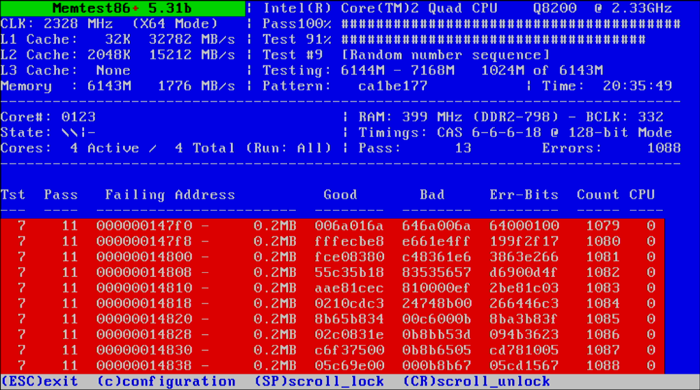
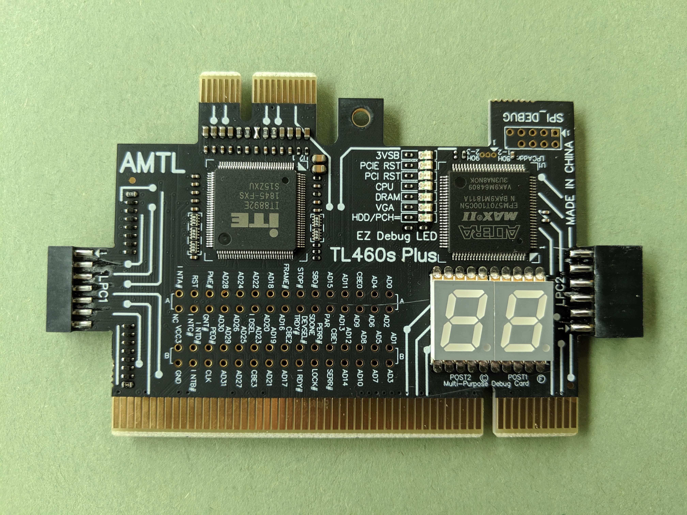
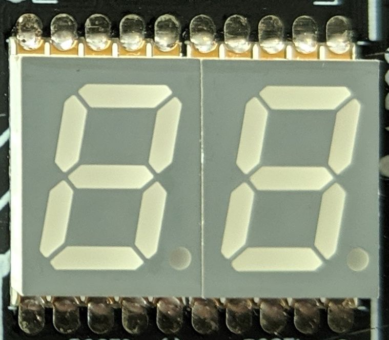
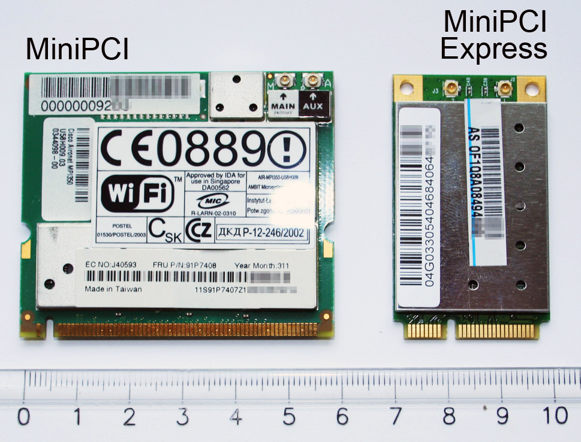
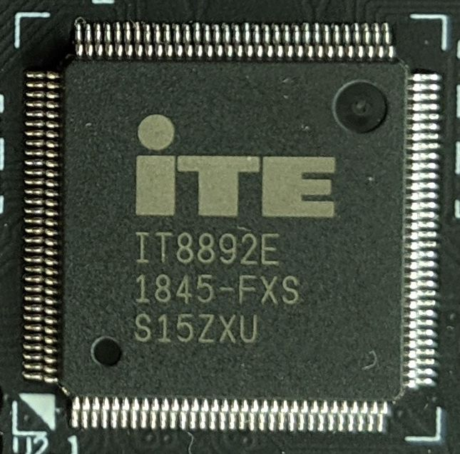
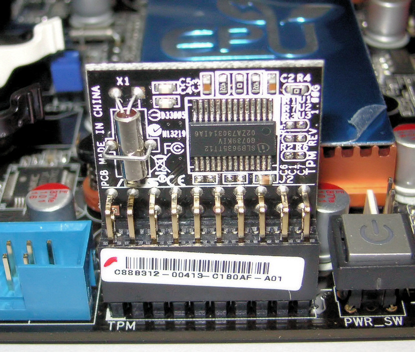
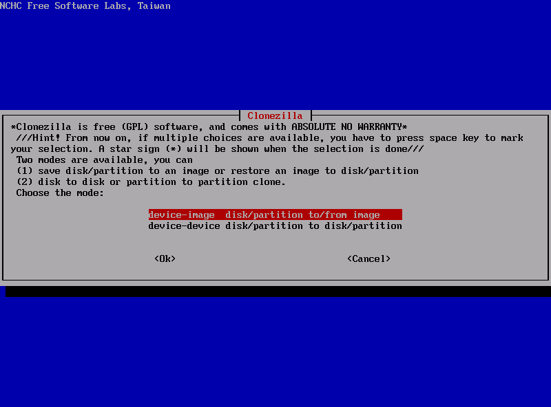
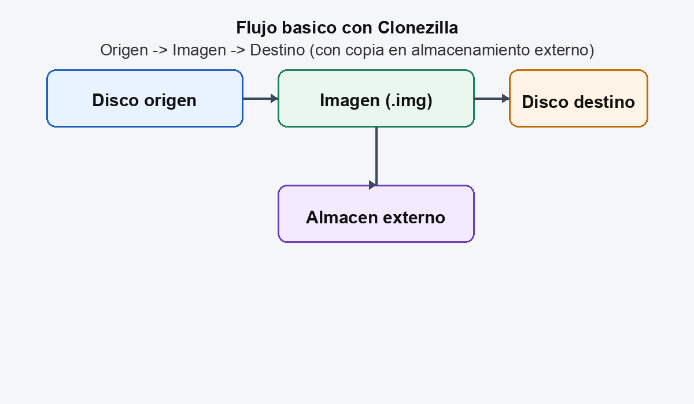
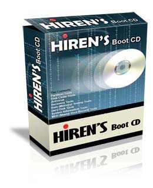

MM U11.1. Utilidades para el mantenimiento
11.1. Utilidades para el mantenimiento¶
En un taller real, el software de mantenimiento es tan importante como las herramientas fisicas. Esta unidad recopila utilidades actuales, tanto libres como con licencia, y explica cuando usarlas y como instalarlas de forma segura.
Esquema a seguir antes de realizar una practica/resolucion problemas taller¶
Protocolo Técnico Universal (con Documentación Previa)
Este protocolo aplica a:
- 🧪 Practica
- 🔧 Incidencia
- 🖥 Diagnostico
- 🌐 Problema de red
- 💾 Error de sistema
%%{init: {'theme': 'base'}}%%
flowchart TD
START[📄 Leer enunciado / Descripción del problema]:::main
ANALISIS{🧠 ¿Comprendo la situación?}:::decision
ACLARAR[❓ Identificar qué se pide<br>o qué está fallando]:::action
INFO[📚 Consultar documentación técnica]:::action
OBJ{🎯 ¿Está claro el objetivo o síntoma?}:::decision
PLAN[📝 Diseñar plan de actuación]:::action
DOCPLAN[📋 Documentar qué se va a hacer<br>antes de intervenir]:::action
RIESGO{⚠️ ¿Hay riesgo para datos o hardware?}:::decision
BACKUP[💾 Realizar copia / Medidas preventivas]:::action
EJEC[⚙️ Ejecutar intervención controlada]:::action
RESULT{🔍 ¿Resultado esperado?}:::decision
DIAG[🧪 Diagnosticar causa del error]:::action
REGISTRO[📸 Registrar pasos y resultados]:::action
VALIDAR{✔️ ¿Problema resuelto<br>o práctica completada?}:::decision
AJUSTE[🔄 Revisar plan y ajustar]:::action
INFORME[📑 Elaborar informe técnico final]:::success
START --> ANALISIS
ANALISIS -- No --> ACLARAR --> INFO --> OBJ
ANALISIS -- Sí --> OBJ
OBJ -- No --> ACLARAR
OBJ -- Sí --> PLAN
PLAN --> DOCPLAN --> RIESGO
RIESGO -- Sí --> BACKUP --> EJEC
RIESGO -- No --> EJEC
EJEC --> RESULT
RESULT -- No --> DIAG --> AJUSTE --> DOCPLAN
RESULT -- Sí --> REGISTRO
REGISTRO --> VALIDAR
VALIDAR -- No --> AJUSTE
VALIDAR -- Sí --> INFORME
classDef main fill:#4dabf7,color:#fff,stroke:#1864ab,stroke-width:3px;
classDef decision fill:#f1c40f,color:#000,stroke:#d4ac0d,stroke-width:2px;
classDef action fill:#74c69d,color:#fff,stroke:#2b8a3e,stroke-width:2px;
classDef success fill:#2ecc71,color:#fff,stroke:#1e8449,stroke-width:2px;1. Concepto y objetivo¶
Las utilidades de mantenimiento permiten:
- Diagnosticar fallos de hardware y software.
- Verificar estado de discos y memoria.
- Crear copias, imagenes y medios de arranque.
- Auditar seguridad y redes.
- Documentar el estado del equipo.
1.1. Clasificacion rapida¶
- Diagnostico y monitorizacion: identificar fallos y temperaturas.
- Almacenamiento y backup: clonado, imagenes y recuperacion.
- Seguridad y cifrado: proteccion de datos y contraseñas.
- Redes: analisis de trafico y puertos.
- Productividad tecnica: edicion, ofimatica y soporte.
2. Diagnostico y monitorizacion¶
Herramientas actuales y recomendadas:
- HWiNFO: inventario completo de sensores, temperaturas y estado del sistema.
- CPU-Z: identifica CPU, RAM, placa base y perfiles de memoria.
- CrystalDiskInfo: estado SMART y salud de discos.
- MemTest86: pruebas de memoria RAM desde USB de arranque.
Instruccion basica (Windows):
- Descarga desde el sitio oficial.
- Ejecuta la version portable si no necesitas instalar.
- Guarda un informe del estado para el cliente.
2.1 MemTest86 (errores de memoria)¶
MemTest86 permite detectar errores de RAM. Si aparecen errores, la memoria no es fiable y el equipo puede sufrir reinicios, cuelgues o corrupcion de datos.
Salida correcta (ejemplo sin errores):
Salida con problemas (ejemplo con errores):

2.2 Tarjetas POST (PCIe y mini-PCIe en portatiles)¶
Las tarjetas POST muestran codigos de avance o error durante el Power-On Self Test. En equipos que no arrancan, ayudan a localizar en que fase se detiene el sistema. Los codigos suelen mostrarse como dos digitos hexadecimales enviados al puerto 80h.
Pasos basicos de uso (taller):
- Apagar el equipo y descargar electricidad estatica.
- Insertar la tarjeta POST en una ranura PCIe o mini-PCIe compatible.
- Encender el equipo y observar el codigo en el display.
- Consultar la tabla de codigos del fabricante de la placa o del equipo.
Estos pasos y advertencias de ESD aparecen en guias de uso profesional.
Interpretacion de codigos y LEDs:
- El codigo mostrado corresponde al valor en el puerto 80h y debe consultarse en la tabla del fabricante.
- Algunos modelos indican actividad del bus con LEDs (clock, reset, activity, config, idle).
- Las lineas de voltaje (3.3V, 5V, 12V, -12V, 3.3Vaux) suelen mostrarse con LEDs de estado.
Mini-tabla de codigos POST comunes (ejemplo AMI/Supermicro):
| Codigo | Fase aproximada | Interpretacion practica |
|---|---|---|
| 0x32 | Inicio CPU post-memoria | La CPU sigue el POST despues de detectar RAM |
| 0x55 | Memoria | No se detecta memoria o la RAM falla |
| 0x92 | PCI Bus | Inicio de inicializacion del bus PCI |
| 0xA9 | Setup | Entrada en BIOS/UEFI |
| 0xAE | Boot | Evento de arranque legacy |
| 0xB2 | OpROM | Inicializacion de Option ROM |
| 0xD6 | Consola salida | No hay dispositivo de salida de video |
| 0xD7 | Consola entrada | No hay dispositivo de entrada (teclado) |
Nota sobre el chip interno: no existe un unico chip estandar en estas tarjetas. En algunos modelos se observa el IT8892E como ejemplo; depende del fabricante.




2.3 Tarjetas POST LPC (placas base modernas)¶
En placas base actuales, el diagnostico POST tambien puede salir por LPC y se expone a traves de un header TPM/Port 80. Estas tarjetas se conectan a ese conector y muestran el codigo en 7 segmentos. En algunos modelos profesionales se especifica que el header JTPM1 sirve como TPM/Port 80.
Uso basico:
- Localizar el header TPM/LPC en la placa base (manual del fabricante).
- Conectar la tarjeta LPC con el cable adecuado (2x5, 2x7, 2x9 o 2x10 segun fabricante).
- Encender el equipo y leer el codigo en el display.
Chip interno habitual: algunas tarjetas LPC modernas usan CPLD (Intel/Altera Max V) para decodificar el bus LPC y mostrar el codigo en el display.

3. Almacenamiento, backup y arranque¶
Utilidades actuales para taller:
- Rufus (libre): crea USB booteables desde ISOs.
- Ventoy (libre): permite copiar varias ISO en un USB y arrancar sin reinstalar.
- Clonezilla (libre): clonado e imagen de discos completos.
- 7-Zip (libre): compresion y extraccion de archivos.
Ejemplo de flujo en taller:
- Crear USB con Ventoy.
- Copiar ISO de MemTest86 y Clonezilla al USB.
- Arrancar el equipo y ejecutar pruebas o clonar el disco.
Comandos utiles en Linux:
Salida correcta (ejemplo SMART sin problemas):
SMART overall-health self-assessment test result: PASSED
Reallocated_Sector_Ct: 0
Current_Pending_Sector: 0
Offline_Uncorrectable: 0
Salida con problemas (ejemplo SMART):
SMART overall-health self-assessment test result: FAILED
Reallocated_Sector_Ct: 124
Current_Pending_Sector: 8
Offline_Uncorrectable: 3
Salida correcta (ejemplo dd):
Salida con problemas (ejemplo dd):
3.1 Clonezilla en taller (clonacion e imagenes)¶
Clonezilla permite crear imagenes completas o clonar discos sector a sector. Es ideal para migraciones, copias de seguridad y recuperacion rapida.
Ejemplo de uso (clonado disco a disco):
- Arrancar con USB de Clonezilla.
- Seleccionar device-device para clonar directo.
- Elegir disco origen y destino (verificar con cuidado).
- Ejecutar clonacion y comprobar el arranque en el nuevo disco.
Salida correcta (ejemplo de resumen de clonacion):
Salida con problemas (ejemplo):
Ejemplo de uso (imagen):
- Arrancar con Clonezilla.
- Seleccionar device-image para crear imagen.
- Guardar la imagen en un disco USB externo o red.
- Restaurar la imagen en caso de fallo.
Salida correcta (ejemplo de imagen creada):
Salida con problemas (ejemplo):



4. Particionado, recuperacion y discos¶
- GParted (libre): particionado grafico de discos, ideal para ajustes rapidos en taller.
- Rescuezilla (libre): clonacion y restauracion con interfaz amigable basada en Clonezilla.
- CrystalDiskMark (libre): pruebas de rendimiento de SSD y HDD.
- Hiren's BootCD PE (gratuito para uso personal): entorno de arranque con multiples utilidades.
Flujo tipico en taller:
- Arrancar con USB creado con Rufus o Ventoy.
- Revisar SMART y rendimiento con CrystalDiskMark.
- Ajustar particiones con GParted.
- Clonar o restaurar con Rescuezilla si es necesario.
Salida correcta (ejemplo CrystalDiskMark):
Salida con problemas (ejemplo CrystalDiskMark):
Salida correcta (ejemplo GParted):
Salida con problemas (ejemplo GParted):


5. Seguridad y gestion de credenciales¶
- Malwarebytes: deteccion y limpieza de malware.
- Bitwarden: gestor de contraseñas con opciones gratuitas y de pago.
Buenas practicas:
- Usar versiones oficiales y actualizadas.
- Explicar al cliente que los gestores de contraseñas requieren una clave maestra segura.

6. Redes y diagnostico de conectividad¶
- Wireshark: analisis de trafico de red.
- Nmap: deteccion de equipos y servicios en red.
Ejemplo de uso de Nmap:
Salida correcta (ejemplo resumen):
Nmap scan report for 192.168.1.25
Host is up (0.0030s latency).
PORT STATE SERVICE VERSION
22/tcp open ssh OpenSSH 8.9p1
80/tcp open http Apache httpd 2.4.57
Salida con problemas (ejemplo):
7. Productividad tecnica y soporte¶
- LibreOffice: documentacion de informes y presupuestos.
- GIMP: edicion de imagenes para informes o manuales.
8. Herramientas del sistema (Windows y Linux)¶
En muchas incidencias, las herramientas integradas son suficientes:
- Windows:
sfc /scannow,DISM /Online /Cleanup-Image /RestoreHealth,chkdsk /f. - Linux:
journalctl,dmesg,smartctl.
Ejemplo de uso en Windows (CMD como administrador):
Salida correcta (ejemplo sfc):
Beginning system scan. This process will take some time.
Windows Resource Protection did not find any integrity violations.
Salida con problemas (ejemplo sfc):
Salida correcta (ejemplo DISM):
Salida con problemas (ejemplo DISM):
Salida correcta (ejemplo chkdsk):
Salida con problemas (ejemplo chkdsk):
9. Criterios de seleccion en un taller¶
A la hora de elegir software, se recomienda:
- Priorizar herramientas con soporte activo y comunidad.
- Verificar requisitos del equipo del cliente.
- Elegir licencias compatibles con el uso profesional.
- Mantener un repositorio interno con instaladores verificados.
10. Buenas practicas en la instalacion¶
- Descargar siempre desde sitios oficiales.
- Verificar hashes si el fabricante los ofrece.
- Documentar versiones usadas en el parte de trabajo.
11. Resumen final (ideas clave)¶
- Las utilidades de mantenimiento permiten diagnosticar y documentar problemas reales.
- Herramientas como HWiNFO, CPU-Z y CrystalDiskInfo son basicas en taller.
- Rufus, Ventoy y Clonezilla facilitan la recuperacion y el clonado.
- Wireshark y Nmap ayudan a resolver incidencias de red.
- La seguridad y la licencia son criterios obligatorios en cualquier herramienta.
12. Referencias y enlaces¶
- Tema 8 (Wikibooks): https://es.wikibooks.org/wiki/Mantenimiento_y_Montaje_de_Equipos_Inform%C3%A1ticos/Tema_8/Texto_completo
- Rufus: https://rufus.ie/
- Ventoy: https://www.ventoy.net/
- Clonezilla: https://clonezilla.org/
- Clonezilla (descarga oficial): https://clonezilla.org/downloads.php
- MemTest86: https://www.memtest86.com/
- HWiNFO: https://www.hwinfo.com/
- CPU-Z: https://www.cpuid.com/softwares/cpu-z.html
- CrystalDiskInfo: https://crystalmark.info/en/software/crystaldiskinfo/
- POST card (definicion y puerto 80h): https://en.wikipedia.org/wiki/POST_card
- Guia de uso PCI/miniPCI POST (PC-Doctor): https://www.pc-doctor.com/support/view-article/33%3Ahow-to-use-the-pci-and-minipci-post-cards
- PCI POST Card FAQ (PassMark): https://www.passmark.com/support/pci-post-card-professional-faq.php
- AMI BIOS POST Codes (Supermicro QRG): https://www.supermicro.com/QuickRefs/motherboard/C242/QRG-2097.pdf
- AMI BIOS POST Codes (Supermicro Grantley): https://www.supermicro.org.cn/manuals/other/AMI_BIOS_POST_Codes_for_Grantley_Motherboards.pdf
- LPC Debug Card (ElmorLabs, CPLD Max V): https://www.elmorlabs.com/product/p80db2-lpc-debug-card/
- TPM/Port 80 Header (Supermicro X14SBH): https://www.supermicro.com/support/manuals/product/motherboard/X14SBH/Content/connections/headers/tpm-port-80-header-x14sbh.htm
- CrystalDiskMark: https://crystalmark.info/en/software/crystaldiskmark/
- GParted: https://gparted.org/
- Rescuezilla: https://rescuezilla.com/
- Hiren's BootCD PE: https://www.hirensbootcd.org/
- Wireshark: https://www.wireshark.org/
- Nmap: https://nmap.org/
- Bitwarden: https://bitwarden.com/
- LibreOffice: https://www.libreoffice.org/download/download/
- GIMP: https://www.gimp.org/
- 7-Zip: https://www.7-zip.org/
- Malwarebytes: https://www.malwarebytes.com/
- Logo 7-Zip (imagen): https://commons.wikimedia.org/wiki/File:7ziplogo.svg
- MemTest86+ errores (imagen): https://commons.wikimedia.org/wiki/File:Memtest86%2B_memory_errors.png
- POST card PCIe (imagen): https://commons.wikimedia.org/wiki/File:BIOS_POST_card_for_PCI,_PCIe_and_LPC_bus.jpg
- POST card 7 segmentos (imagen): https://commons.wikimedia.org/wiki/File:BIOS_POST_card_for_PCI,_PCIe_and_LPC_bus_7segment.jpg
- Chip IT8892E (imagen): https://commons.wikimedia.org/wiki/File:BIOS_POST_card_for_PCI,_PCIe_and_LPC_bus_IT8892E.jpg
- MiniPCI vs MiniPCIe (imagen): https://commons.wikimedia.org/wiki/File:MiniPCI_and_MiniPCI_Express_cards.jpg
- TPM Asus (imagen): https://commons.wikimedia.org/wiki/File:TPM_Asus.jpg
- Logo Clonezilla (imagen): https://commons.wikimedia.org/wiki/File:CZLogo2.png
- Captura Clonezilla (imagen): https://commons.wikimedia.org/wiki/File:Clonezilla.png
- Logo Rufus (imagen): https://commons.wikimedia.org/wiki/File:Rufus-logo.png
- Logo GParted (imagen): https://commons.wikimedia.org/wiki/File:Scalable_gparted.svg
- Logo Wireshark (imagen): https://commons.wikimedia.org/wiki/File:Logo_wireshark.jpg
- Logo LibreOffice (imagen): https://commons.wikimedia.org/wiki/File:LibreOffice_logo.svg
- Logo Bitwarden (imagen): https://commons.wikimedia.org/wiki/File:Bitwarden_logo.svg
- Logo Hiren's BootCD PE (imagen): https://www.hirensbootcd.org/
Fecha de actualización: 18/02/2026